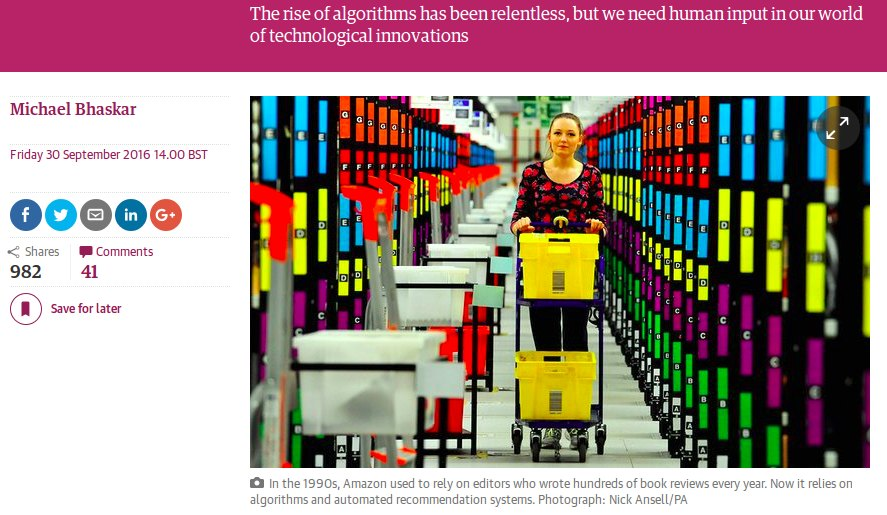
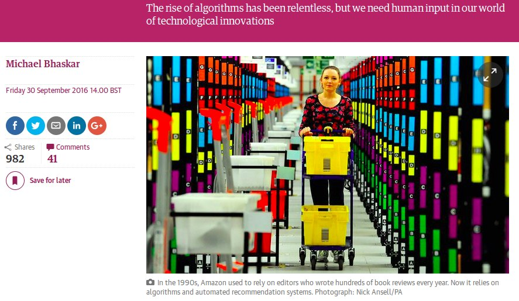

liQen
Mapping micro-conflicts through people experiences
About Numbers
3.5 < 35

About Numbers
The perception under certain circumstances has an informative value to reduce machine bias.
Tour
Let's start here
Mapping micro-conflicts through people experiences
3.5 < 35
The perception under certain circumstances has an informative value to reduce machine bias.
Let's start here